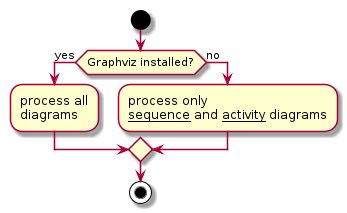
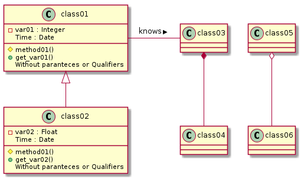

Software Development Lifecycle (SDLC) tools
Questions
What are the key concepts and steps in the SDLC
What are the tools for a project?
Objectives
We will have an introduction to some SDLC key features
We will get some theory of project tools and thinking.
Instructor note
Theory
Demos/type-alongs
Exercise
The waterfall model
Requirements
Analysis and design
Development
Test
Development and maintenance

Good approach for small and simple systems where the team knows the system and requirements very well.
Warning
Error is spreading
small mistakes in the beginning will have large impact on the end result.
e.g. bugs, architecture limiting extensions
large costs economically and timely
Include iteration
Spiral model
Planning: reqs, identification: analysis
Risk analysis: build prototypes to identify risks
Engineering: software implementation
Evaluation: stakeholder review, feedback, plan next iteration
Each lab is new cycle: prototype–> RC –> launch
Risk driven

Disadvantages
Expensive: Spiral Model is not suitable for small projects
Too much dependability on Risk Analysis
Take aways from other methods
The Agile manifest
“Agile = characterized by the division of tasks into short phases of work and frequent re-assessment and adaptation of plans.”
Values
Individuals and interactions over processes and tools
Working software over comprehensive documentation
Customer collaboration over contract negotiation
Responding to change over following a plan
Most other models are Agile… see the extra reading section: SDLC models
Modern principles:
automated tests, continuous integration
Deliver as fast as possible: small iterations are easier to manage
Extreme Programming
Pair programming
Collaborate, continuous code inspection
Real-time development technique to increase algorithm implementation
Test-driven development
Write test
Write function to fail test
Write code to pass test
See also
[Software Development Lifecycle on Tuesday](https://github.com/UPPMAX/programming_formalisms/blob/main/development_design/README.md]
Conclusion
Each team has unique requirements
Try out agile practices that make the most sense
Don’t be afraid of trial and error
The tools/concepts for Developing a programming project
Parts to be covered
☑ Planning
Pseudocode
Unified Modelling Language
☑ Testing
Different levels
☑ Source/version control
Git etc
☑ Collaboration
GitHub
☑ Reproducibility (for you and others)
Dependencies
(Workflows)
Containers (deployment)
☑ Sharing
open science
citation
licensing
☑ Documentation
Tutorials
How-to guides
Explanation
Reference
Planning: Analysis and design
Note
“If I had nine hours to chop down a tree, I’d spend the first six sharpening my axe.
Modelling sharpens your axe since it helps you think about what you’re going to build, how to seek feedback, and where to make improvements. It prepares you to build the real thing to reduce any potential risk of failure. “
Note
Planning step is to …
get an overview of the project/program.
help planning writing the code
identify parts needed
(risk analysis)
Can be divided into analysis and design
Analysis part is to state the problem and define inputs and outputs
graphical tools like UML
text
objects in OOP
Design phase to find out the specific algorithms needed
pseudocode+UML
classes in OOP
functions/modules in functional programming
Top-down
Clearly state whole problem
Define inputs and outputs
Design the algorithm with
pseudocodeTurn the algorithm into specific language statements
Test the resulting program

Bottom-Up
Start with parts first and develop a bigger organization with time.
How do you program?
Menti
Top-down
Bottom-up
Flowcharts or Unified Modeling Language
https://en.wikipedia.org/wiki/List_of_Unified_Modeling_Language_tools
Modeling
Code generation
Reverse engineering
Analyze code complexity
Other metrics
We will in the course use
Sequence
Activity/algorithm flowchart
Class diagrams
Sequence

@startuml
Alice -> Bob: Authentication Request
Bob --> Alice: Authentication Response
Alice -> Bob: Another authentication Request
Alice <-- Bob: Another authentication Response
@enduml
Activity
A flowchart that shows the process and its correlating decisions, including an algorithm or a business process.

@startuml
start
if (Graphviz installed?) then (yes)
:process all\ndiagrams;
else (no)
:process only
__sequence__ and __activity__ diagrams;
endif
stop
@enduml
Algorithm flowchart
@startuml
start
if (stuff) then (true)
:action 2;
endif
stop
@enduml
Class
A diagram that shows the system classes and relationships between them.


@startuml
class Car
Driver - Car : drives >
Car *- Wheel : have 4 >
Car -- Person : < owns
@enduml
Tools
PlantUML used in this course
Open-source
Can be integrated with IDE:s, Java documentation, Word
Scripts rather than drawing tools
Graphviz
Graphviz is open source graph visualization software.
Graph visualization is a way of representing structural information as diagrams of abstract graphs and networks.
It has important applications in networking, bioinformatics, software engineering, database and web design, machine learning, and in visual interfaces for other technical domains.
Mermaid
Open-source
Not as many diagrams
renders in browser
Pseudocode
Pseudocode does not have syntax rules of any particular language
no systematic standard form.
Some borrow style and syntax from some conventional programming language
like Fortran, Pascal, BASIC, C, C++, Java, Lisp, and ALGOL.
Variable declarations are typically omitted.
Function calls and blocks of code, such as code contained within a loop, are often replaced by a one-line natural language sentence.
Example
algorithm ford-fulkerson is
input: Graph G with flow capacity c,
source node s,
sink node t
output: Flow f such that f is maximal from s to t
(Note that f(u,v) is the flow from node u to node v, and c(u,v) is the flow capacity from node u to node v)
for each edge (u, v) in GE do
f(u, v) ← 0
f(v, u) ← 0
while there exists a path p from s to t in the residual network Gf do
let cf be the flow capacity of the residual network Gf
cf(p) ← min{cf(u, v) | (u, v) in p}
for each edge (u, v) in p do
f(u, v) ← f(u, v) + cf(p)
f(v, u) ← −f(u, v)
return f
Depending on the writer, pseudocode may therefore vary widely in style,
from a near-exact imitation of a real programming language at one extreme
to a description approaching formatted prose at the other.
Mathematical style pseudocode
Used in numerical computation
\sum_{k\in S} x_k
Objectives
Planning phase section aims to
Introduce flowcharts and UML expressions
Get into UML coding with PlantUML
Test Pseudocoding
See also
Diagrams will be cover on
Tuesday during several part of the Software development processes
Friday during Modular programming
Testing
Does it work for all legal input data sets??
Unit testing
Integration tests (test modules together as a whole)
Typical testing process
See also
More about testing day 3.
Source/version control and collaboration
The essence of version control
Summarized from Code refinery
System which records snapshots of a project
Implements branching:
You can work on several feature branches and switch between them
Different people can work on the same code/project without interfering
You can experiment with an idea and discard it if it turns out to be a bad idea
Implements merging:
Person A and B’s simultaneous work can be easily combined
What we typically like to snapshot
Software (this is how it started but Git/GitHub can track a lot more)
Scripts
Documents (plain text files much better suitable than Word documents)
Manuscripts (Git is great for collaborating/sharing LaTeX or Quarto manuscripts)
Configuration files
Website sources
Why version control
Roll-back functionality
Mistakes happen - go back to a working version.
Branching
Often you need to work on several issues/features in one code - without branching this can be messy and confusing.
Collaboration
With version control, none of these are needed anymore (or have much simpler answers):
“I will just finish my work and then you can start with your changes.”
“Can you please send me the latest version?”
“You never got the code I send by email? Maybe the spam filter marked it as malicious?”
“Where is the latest version?”
“Which version are you using?”
“Which version have the authors used in the paper I am trying to reproduce?”
Reproducibility
How do you indicate which version of your code you have used in your paper?
When you find a bug, how do you know when precisely this bug was introduced
Compare with Dropbox or Google Drive
|:+1:| Document/code is in one place, no need to email snapshots.
|:-1:| How can you use an old version? Possible to get old versions but in a much less useful way .
|:-1:| What if you want to work on multiple versions at the same time? Do you make a copy? How do you merge copies?
|:-1:| What if you don’t have internet?
Why Git?
We will use Git to record snapshots of our work:
Easy to set up: no server needed.
Very popular: chances are high you will need to contribute to somebody else’s code which is tracked with Git.
Distributed: good backup, no single point of failure, you can track and clean-up changes offline, simplifies collaboration model for open-source projects.
Important platforms such as GitHub, GitLab, and Bitbucket build on top of Git.
However, any version control is better than no version control and it is OK to prefer a different tool than Git.
Other tools:
Collaboration
Example
Someone has given you access to a repository online and you want to contribute to it.
Quite easy to make a copy and send a change back.
get repository, make a change locally, and send the change directly back.
make a “pull request” that allows a review.
Once we know how code review works:
we will be able to propose changes to repositories of others
review changes submitted by external contributors.
Objectives
Collaboration aims to
Get into working more with GitHub for collaboration
Centralized workflow (good within a group)
Forking (better for contribution to other’s project)
Contributing to other’s projects
See also
Git and GitHub will be used in the other days as well
Reproducibility and sharing
Reproducible research
Have you ever spent days trying to repeat the results that took you hours to do the first time last week?
Or you have to do paper revisions, but you just can’t get the results to match up?
Nothing is a worse feeling - either for you or for science itself.
We will integrate this topic in the hands-on.
We will discuss different methods and tools for better reproducibility in research software and data.
Virtual environments with
pip install(venv/virtualenv) will be covered in the hands-on.Conda environment is referred to in the extra material.
We will demonstrate how version control, workflows, containers, and package managers can be used to record reproducible environments and computational steps.
Objectives
More about reproducibility aims to
Get a short overview of recording dependencies
Get short intro to tools:
Pip and PyPI
Conda
Environments
Tools for other languages than Python
We will develop our code in a virtualenvironment with the python tool
venv
Licensing
Copyright
Protects creative expression
Automatically created
Derivative works usually inherit copyright of the thing derived
Time frame: essentially forever (lifetime + X years)
When can you use?
When there is a license saying you can
Limited other cases (private use, fair use: context dependent)
In practice: people do many things, but then can’t share their output if license does not allow it or is not clarified
Examples
Custom/closed/proprietary
Derivative work typically not possible
Unusual in academics
Permissive (MIT, BSD, Apache)
Derivative work does not have to be shared
Weak copyleft share-alike (LGPL, MPL)
Derivative work is free software but is limited to the component
Strong copyleft share-alike (GPL, AGPL)
Derivative work is free software and derivative work extends to the combined project
Software Citation
Think the same as for a scientific paper
See also
Parts of sharing will be covered on Tuedays afternoon.
Keypoints
Share your code! Eventually others will probably use it anyway.
Licence your software and do it early. Default is “no one can make copies or derivative works”.
Get DOI or at least state how to cite your software
Objectives
More about sharing aims to:
introduce reproducibility and sharing, licensing and citation
get into thinking about dependencies and solutions
get into choosing license, citation and DOI
Documentation
Documentation comes in different forms
What is documentation?
Tutorials: learning-oriented, allows the newcomer to get started
How-to guides: goal-oriented, shows how to solve a specific problem
Explanation: understanding-oriented, explains a concept
Reference: information-oriented, describes the machinery Not to forget
Project documentation:
requirements: what is the goal of the software, risks, platforms
the analysis: pseudocode and UML
risk analysis
There is no one size fits all: often for small projects a README.md or
README.rst can be enough (more about these formats later).
Objectives
Documentation aims to:
introduce motivation for documentation
get tips for in-code documentation
get tips for README files
get tips for full documentation and tutorials
Summary of SDLC tools
Now after the overview you are ready to dig deeper in the topics and try it out yourself!
Keypoints
Software development is both series of steps:
Requirements
Analysis and design
Development
Test
Development and maintenance
… and iteration of these
Planning for reproducibility, modularity and documentation should be started in the beginning
Tools for the developer
Planning: UML and pseudocode
Development iteration: git
Testing: test functions (Covered later)
Collaboration: GitHub
Sharing: GitHub, licenses, citation
Documentation: In-code, READMEs, html